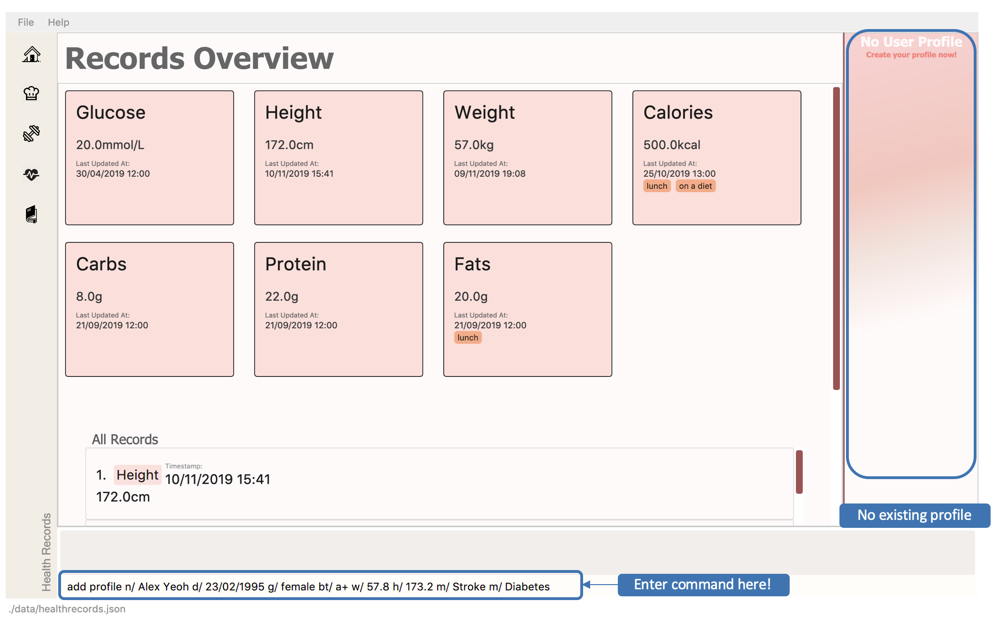

What is DukeCooks?
DukeCooks is an all-in-one lifestyle desktop application designed specially for health-conscious individuals. With the hectic schedules that we have as college students, we can definitely relate to the problems that is faced daily in trying to lead a healthy lifestyle . With that in mind, We have put together this application, called DukeCooks. We believe that DukeCooks could be a remedy to some of the problems faced by everyone.
In DukeCooks, managing your meals preparation and workouts has never been made easier! Everything that you can only imagine to be done in more than one application, can now simply be done in DukeCooks alone! DukeCooks saves you the time and effort to switch between application!
Furthermore, DukeCooks runs on a command-line interface (CLI). This means that everything that DukeCooks is capable for doing, can be executed within a single line.
Who is behind DukeCooks?
DukeCooks is developed by a group of 5 second-year students from School of Computing, National University of Singapore
My Contributions to DukeCooks
Building the Health Records feature
The health records feature was developed with the main purpose of providing user’s with the ability to track their health progress. The health record feature is adapted from the existing Address Book 3 (AB3). Commands like edit, add, delete are referenced and modified accordingly.
Building the Profile feature
The profile feature is designed to let users personalise their profile within the application. The profile feature is adapted from the existing Address Book 3 (AB3). Commands like edit, add, delete are referenced and modified accordingly.
Major Enhancements
Enhancement 1: Creating different modes of ListHealthCommand
In health records feature, two dynamic views were included to present the records differently. Users can easily view their recorded data in two modes: summary and records type view. With summary being the main screen when routing over from other features, records are filtered to show only the latest records for quick referencing whereas record type view mode provides graph representation of the data for better illustration on health progress.
Enhancement 3: Integrating Graphical User Interface (GUI) for all features
In order for the GUI to show panels dynamically based on user’s selection, I have built and structured the skeleton code to link all the features in the application. This means that the application will switch to the relevant feature panel based on the user’s input.
Minor Enhancements
Enhancement: Add styling to the Health Records pages
I have made styling changes to the health records view such that it is more appealing for users to use.
Code contributed:
Visit this link to check out my code contributions to DukeCooks.
Getting Started with DukeCooks
The following information are my contributions to the |
To view the full User Guide of DukeCooks, please visit this link. |
Health Records
Going for a health checkup soon? You can use the commands in this section to manage your health records, all within DukeCooks!
Understanding the Health Records
Before you get overwhelmed by what’s in Health Records, here’s everything you need to know to get you started! Keep scrolling!
Refer to the following diagrams for a better understanding.

Looking for just a specific record type? DukeCooks got you covered! Refer to diagram below!

|
DukeCooks will only show health records of the past 1 month in the graph illustrated above. |
The following record types are supported by DukeCooks:
| Record Type | Unit |
|---|---|
Weight |
kg |
Height |
cm |
Glucose |
mmol/L |
Calories |
kcal |
Protein, Fats, Carbs |
g |
|
Shared data across! Weight and Height records will be synchronized to profile |
Adding a profile
Want to have a personalized profile of your own? This is just the perfect command you’re looking for!
|
This action only works once! DukeCooks only allows storing of one user profile. |
Command: add profile
Format: add profile n/<name> d/<date of birth> g/<gender> bt/<blood type> w/<weight> h/<height> [m/<medical history>]
Example usage: add profile n/Alex Yeoh d/23/02/1995 g/female bt/a+ w/57.8 h/173.2 m/Stroke m/Diabetes
-
Enter the command in the command box and hit the Enter key.
Figure 3. Adding a profile -
If the command succeeds, you will see the following message in the result display and your created profile!
 Figure 4. Successfully added a profile
Figure 4. Successfully added a profile
|
Say no to bad data! DukeCooks helps to sync your data inputs with your health records! (As shown in Step 2) |
Editing a profile
Need to make amendments to your profile? Simply follow the format below!
|
This action is only applicable if there is an existing profile already. |
Command: edit profile
Format: edit profile n/<name> d/<date of birth> g/<gender> bt/<blood type> w/<weight> h/<height> [m/<medical history>] [m-/<medical history>]
|
To remove existing medical history, include this prefix to your command: |
Example usage: edit profile g/male bt/a- w/57.5 h/173 m-/Stroke m/High Blood Pressure
-
Enter the command in the command box and hit the Enter key.
 Figure 5. Editing the profile
Figure 5. Editing the profile -
If the command succeeds, you will see the following message in the result display and your updated profile!
 Figure 6. Successfully edited the profile
Figure 6. Successfully edited the profile
|
Say no to bad data! DukeCooks helps to sync your data inputs with your health records! (As shown in Step 2) |
Making DukeCooks
The following information provides my contributions to the Developer Guide. An explanation of how the feature (Dashboard), that I am in-charged of, is made. |
To view the full Developer Guide of DukeCooks, please visit this link. |
Health Records feature
The Health Records feature allows user to track their health progress using the commands
add health, as well as making changes to their records with edit health, delete health and clear health.
Additionally, users can create and personalize their own profile with the commands add profile,
edit profile and delete profile.
In a nut shell, the Health Records feature supports the following operations:
-
Storing of the health data recorded by the user
-
Present the data with graph representation that shows the health progress of the user
-
Personalizing user profile
Implementation
A Record consist of four key components: Type, Timestamp, Value, Remark.
Refer to the diagram below to understand the structure of Record.

Implementation of Health Records commands
Record class supports multiple commands. It includes:
-
AddRecordCommand- Adds aRecordinto DukeCooks -
DeleteRecordCommand- Deletes aRecordfrom DukeCooks -
EditRecordCommand- Edits the specifiedRecordwith a new changes made -
ListHealthCommand- Lists all available records to user -
ListHealthByTypeCommand- Lists all available records of the corresponding record type to user -
ClearHealthCommand- Clears all available records
Person class supports multiple commands. It includes:
-
AddProfileCommand- Adds a newPersoninto DukeCooks -
DeleteProfileCommand- Deletes thePersoninto DukeCooks -
EditProfileCommand- Edits various fields of the specifiedPerson
|
User Profile consist of one |
Execution of AddRecordCommand
The sequence diagram below illustrates the execution of an AddRecordCommand.

The command will first be parsed in 'DukeCooksParser' and be handled to its corresponding parsers (i.e. AddRecordCommandParser) based on its variant word
(i.e. Add).
After the parsing has been executed successfully, the string argument will be converted to Type, Value, Timestamp,
Remark attributes. These attributes will then be passed into the Model component for its underlying validity checks.
Once all checks have passed successfully, a new Record will be created according to those attributes
and added to health records with the command Model#addRecord.
|
The illustration of the above execution only applies to all record types except for Weight and Height. Refer to the next section for more details. |
Syncing record data with profile
To illustrate why the simple model of AddRecordCommand will not suffice for Weight and Height record types,
below depicts the class diagram of the Person class

It can be observed that Person share similar attributes to Record, both Weight and Height.
However, the implementation of the two types are distinctly different among Record and Person. Record have
structured Weight and Height to be attributes of its Type enum class while Person has defined
them separately to be classes of their own.
The Sequence diagram below illustrates the execution of AddRecordCommand with additional component introduced to
help sync data between the Record and Person.

Once Model#addRecord has been executed, AddRecordCommand will check the type of
the newly added record. If it is a Weight or Height record, LinkProfile#updateProfile
will be called. The LinkProfile helps AddRecordCommand to invoke EditProfileCommand by
calling for changes to be made for profile.
A simplified activity diagram of the problem can be shown below.
Once profile have been successfully updated, person’s weight/ height is expected to be in sync with health records.